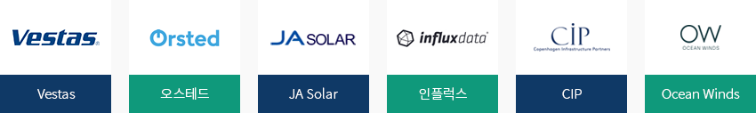
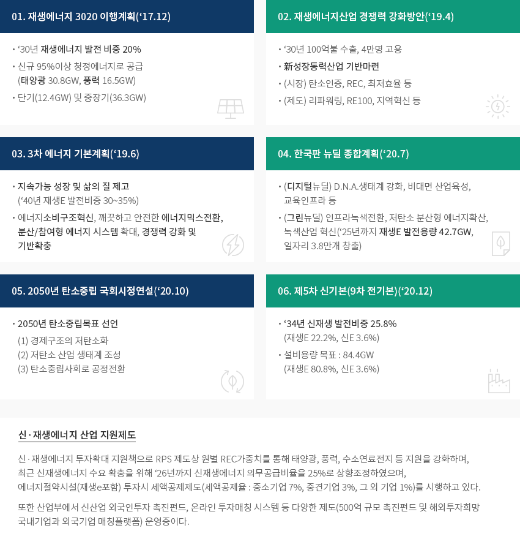
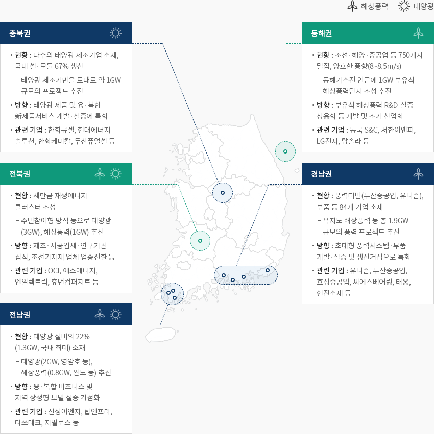

신재생에너지
- Home
- Why KOREA
- 산업
- 신재생에너지
신재생에너지
Renewable energy
-
준수한 기술수준을 바탕으로 글로벌 경쟁력 확보 추진 내용닫기준수한 기술수준을 바탕으로 글로벌 경쟁력 확보 추진한국과학기술기획평가원(KISTEP, 2018)에 따르면, 국내 신·재생에너지 분야 기술수준은 86%(최고 100%)
수준으로 선진국(유럽, 미국, 일본)과는 10% 내외 기술격차가 존재한다.태양광 산업은 셀, 모듈제조기업(한화솔류션, 신성이엔지, 현대에너지솔류션, OCI 등)위주로 성장하고 있으며,
내수시장 확대와 더불어 수출 및 해외공장 등 전세계 공급비중을 높혀나가고 있다.풍력산업은 성장 잠재력이 높은 주요부품(블레이드, 전력변환장치 등) 생산 인프라를 보유중이며, 대규모 풍력단지조성 등을 통해
내수시장 및 투자를 확대하고 글로벌 경쟁력 확보하고자 한다.수소차, 연료전지 등 수소활용분야의 국내 제조기업 기술력은 확보되었으며, 그린수소생산 제조 및 관련 인프라
(운송, 저장, 충전판매)기반 확대를 위한 글로벌 협력사업도 추진중이다."신재생에너지 원별 국내 기술경쟁력 수준현황"신재생에너지 원별 국내 기술경쟁력 수준현황 표로 에너지원, 연간 정부 투자금액(백만달러), 기술경쟁력 확보(對 최고국 기술격차, 對 최고국 기술격차 증감, 선도국 대비 기술수준) 정보제공 에너지원 연간 정부 투자금액(백만달러)1) 기술경쟁력 확보 對 최고국 기술격차2) 對 최고국 기술격차 증감 2) 선도국 대비 기술수준 3) 태양광 52.4 3년 이하 ‘14년 대비 1년 미만 감소 80% 이상 풍력 35.9 5년 이상 ‘14년 대비증가 60% 이상 수소 6.1 3~5년 ‘14년 대비 1년 이상 감소 70% 이상 연료전지 25.9 3년 이하 ‘14년 대비 1년 미만 감소 80% 이상 태양열 4.2 3년 이하 ‘14년 대비 1년 미만 감소 80% 이상 지열 5.7 5년 이상 ‘14년 대비 1년 이상 감소 70% 이상 해양 6.8 3~5년 ‘14년 대비 1년 이상 감소 60% 이상 ※ 출처 : 신재생에너지 핵심기술개발사업 특정평가 보고서(KISTEP, 2018.7)- 2013~2017년, 연평균 정부투자금액, 사업 예산 요구서(2014~2018), 2018년 평균환율 적용하여 원·달러 환산
- 2016년 기술수준평가(KISTEP, 2017)
- 신재생에너지 기술수준 및 국외기술도입현황 조사(KISTEP)
-
신재생에너지 설비용량 및 발전비중 지속 증가 내용열기신재생에너지 설비용량 및 발전비중 지속 증가한국에너지공단에 따르면 신·재생에너지 개발∙이용∙보급 촉진법 개정시행(‘19.10)으로 비재생폐기물 실적이 제외되어
통계가 작성되고 있다. 20년 신·재생에너지 발전비중은 7.43%로 태양광, 풍력 등 재생에너지 발전량 증가로 전년대비 25.9% 증가했다.
(19년 34,196GWh → 20년 43,062GWh)
또한, 20년 신·재생에너지 누적설비용량은 25.9 GW로 전년대비 3.2%p 상승하였으며, 태양광(66.8%), 풍력(6.3%)
설비 비중을 차지하고 있다. (KEA, 2020)(단위 : 천toe)신재생에너지 생산량 현황 표로 구분, 년도 정보제공 ※ 출처 : 한국에너지공단 신재생에너지센터 「신재생에너지보급통계」
※ 통계공표시기 : 조사기준년도 익월 11월(확정공표)
※ 주석 : 소수점 2자리에서 반올림 수치로 KOSIS등의 자료와 차이가 있을 수 있음
※ 주석 : 세부내용은 ‘2018년 신재생에너지 보급통계’(‘19년 발간) 자료 참조" 최근 5개년 신·재생에너지 발전량 및 발전비중 "신재생에너지 생산량 현황 표로 구분, 년도 정보제공 구분 '16 '17 '18 '19 '20 총발전량(MWh) 562,219,124 78,012,662 594,585,781 589,148,478 579,936,931 발전비중(%) 3.32 4.11 4.99 5.80 7.43 총발전량(MWh) 18,664,233 23,767,948 29,656,919 34,195,813 43,061,511 재생 에너지 발전량 17,160,150 21,012,926 26,189,965 30,879,376 37,161,788 신재생 에너지 발전량 1,504,083 2,755,022 3,466,954 3,316,436 5,899,723 재생 에너지 태양광 5,515,817 7,737,852 10,154,964 14,163,040 19,297,854 풍력 1,683,142 2,169,014 2,464,879 2,679,158 3,149,798 수력 2,858,714 2,819,882 3,374,375 2,791,076 3,879,383 해양 495,556 489,466 485,353 474,321 457,263 바이오 6,237,564 7,466,664 9,363,229 10,415,632 9,938,354 폐기물 369,357 330,048 347,166 356,149 439,137 신재생 에너지 연료전지 1,143,402 1,469,289 1,764,948 2,285,164 3,522,350 IGCC 360,681 1,285,733 1,702,006 1,031,272 2,377,374 -
신재생에너지 산업현황 내용열기신재생에너지 산업현황現정부 재생에너지전환정책 추진으로 신·재생에너지 산업 중심으로 확대됨에 따라, ‘20년 산업통계는’ 신·생에너지산업 특수분류
‘제정(21.6월) 및 제조업, 건설, 공급, 서비스업을 포괄하는 전산업 현황을 국가통계로 조사·공표하였다.
‘20년 기준 신∙재생에너지 전체 산업의 매출은 약 25.5조원, 종사자수는 11만 9천명 및 투자는 7.7조원 규모의 산업으로 성장하고 있다.건설업은 태양광 중심의 신규 보급확대로 큰 비중을 차지하고 있으며, 연료전지 및 풍력 건설업 순으로 성장중이며
발전 및 열공급업도 태양광 소규모 발전사업자의 증가로 업체수 및 종사자수에서 각각 96%, 70%의 비중을 차지하고 있다.제조, 건설, 공급외 서비스업도 신·재생에너지 보급확대에 따른 엔지니어링 및 유지보수 서비스업의 증가세를 중심으로
매출 1.3조원, 종사자수 5천명 규모로 조사되었다.신재생에너지 생산량 현황 표로 구분, 업체수, 종사자, 매출, 투자 정보제공 구분 업체수 종사자 매출 투자 개 비중(%) 명 비중(%) 억원 비중(%) 억원 비중(%) 제조업 499 0.6 12,759 10.8 107,369 42.2 3,180 3.9 건설업 2,169 2.6 17,617 14.9 71,886 28.2 995 1.2 발전·열공급업 78,276 95.6 82,810 69.9 62,696 24.6 72,460 94.6 서비스업 963 1.2 5,322 4.5 12,779 5.0 210 0.3 金산업 81,907 100.0 118,508 100.0 254,730 100.0 76,845 100.0 ※ 출처: 2020년 신∙재생에너지 산업통계 조사 결과(한국에너지공단, ‘21.12월) -
태양광, 풍력 발전사업 관련 글로벌 기업들의 한국 진출 지속 내용열기태양광, 풍력 발전사업 관련 글로벌 기업들의 한국 진출 지속최근 일본, 독일, 스페인, 중국 등에서 태양광, 풍력 발전사업 진출을 위하여 한국 법인 설립을 꾸준히 추진하고 있으며,
유럽 및 북미 주요 기업은 한국 발전자회사, 지자체 및 한국 기업을 통해 해상풍력 계획 입지에 참여하기 위한 법인 설립을 추진하고 있다.산업통상자원부(2021)에 따르면 한국에 대한 외국인 직접투자(Foreign Direct Investment)는 ‘13년 이후 지속 증가추세를 유지하고 있다.
부품생산을 위한 기계, 반도체 등 중간부품생산 역할을 수행하는 제조업 투자비중이 높은데 기여하며, 또한 4차 산업혁명과
관련 글로벌가치사슬 참여를 위한 투자증가가 요인으로 분석하고 있다.최근 덴마크 풍력 터빈 제조기업인 베스타스가 울산 부유식해상풍력 발전단지 조성사업과 관련하여 상생 업무협약을 해결하였으며,
해외민간투자 기업은 SK E&S와 합작한 덴마크의 투자운용사 CIP를 비롯해 영국 및 프랑스의 GIG-토탈, 네덜란드 및 스웨덴의
쉘-코엔스헥시콘, 스페인의 오션윈즈, 노르웨이의 에퀴노르 등 지속적으로 증가하는 추세다.일본 인플럭스(Influx), 중국 JA Solar은 새만금재생에너지 클러스터 內 자금을 출자하고 공장건설을 착공했다.
또한 덴마크 에너지 국영기업 오스테드(Orsted)는 한국 풍력사업 진출을 위해 한국에 아시아태평양지역 두번째 법인을 설립했다."국내 신재생에너지 사업에 진출한 글로벌 기업"
-
신∙재생에너지 육성방안 내용열기신∙재생에너지 육성방안한국 정부는 2050년까지 탄소중립목표 선언을 통해 경제구조의 저탄소화, 저탄소 산업생태계 조성 및 탄소중립사회로
공정전환 달성을 목표로 하위 로드맵 및 이행계획을 수정 변경할 예정이다.최근 2050 탄소중립위원회(‘21.10)는 2030 국가 온실가스 감축목표(NDC, Nationally Determined Contribution) 상향
(2030년까지 2018년 온실가스 배출량의 40% 감축)과 2050 탄소중립 시나리오안(전기∙열 생산에 소요되는 탄소배출
최소화를 위한 석탄발전 중단 등)에 대해 의결하고 정부에 제안하였다.현재 수립된 신∙재생에너지 육성방안과 관련된 정책으로는 ▲재생에너지 3020 이행계획(‘17.12),
▲재생에너지산업 경쟁력 강화방안(’19.4), ▲3차 에너지 기본계획(‘19.6) ▲한국판 뉴딜 종합계획(‘20.7)
▲2050년 탄소중립 국회시정연설(’20.10) ▲ 제5차 신∙재생에너지기본계획(9차 전력수급기본계획)(‘20.12)
▲2050 탄소중립위원회 NDC상향 및 2050시나리오 제시(’21.10) 등이 있다.01. 재생에너지 3020 이행계획(‘17.12)
- ‘30년 재생에너지 발전 비중 20%
- 신규 95%이상 청정에너지로 공급 (태양광 30.8GW, 풍력 16.5GW)
- 단기(12.4GW) 및 중장기(36.3GW)
02. 재생에너지산업 경쟁력 강화방안(‘19.4)
- ‘30년 100억불 수출, 4만명 고용
- 新성장동력산업 기반마련
- (시장) 탄소인증, REC, 최저효율 등
- (제도) 리파워링, RE100, 지역혁신 등
03. 3차 에너지 기본계획(‘19.6)
- 지속가능 성장 및 삶의 질 제고 (‘40년 재생E 발전비중 30~35%)
- 에너지소비구조혁신, 깨끗하고 안전한 에너지믹스전환, 분산/참여형 에너지 시스템 확대, 경쟁력 강화 및 기반확충
04. 한국판 뉴딜 종합계획(‘20.7)
- (디지털뉴딜) D.N.A.생태계 강화, 비대면 산업육성, 교육인프라 등
- (그린뉴딜) 인프라녹색전환, 저탄소 분산형 에너지확산, 녹색산업 혁신(‘25년까지 재생E 발전용량 42.7GW, 일자리 3.8만개 창출)
05. 2050년 탄소중립 국회시정연설(‘20.10)
- 2050년 탄소중립목표 선언
- (1) 경제구조의 저탄소화
- (2) 저탄소 산업 생태계 조성
- (3) 탄소중립사회로 공정전환
06. 제5차 신기본(9차 전기본)(‘20.12)
- ‘34년 신재생 발전비중 25.8% (재생E 22.2%, 신E 3.6%)
- 설비용량 목표 : 84.4GW (재생E 80.8%, 신E 3.6%)
신·재생에너지 산업 지원제도
신·재생에너지 투자확대 지원책으로 RPS 제도상 원별 REC가중치를 통해 태양광, 풍력, 수소연료전지 등 지원을 강화하며, 최근 신재생에너지 수요 확충을 위해 ‘26년까지 신재생에너지 의무공급비율을 25%로 상향조정하였으며, 에너지절약시설(재생e포함) 투자시 세액공제제도(세액공제율 : 중소기업 7%, 중견기업 3%, 그 외 기업 1%)를 시행하고 있다. 또한 산업부에서 신산업 외국인투자 촉진펀드, 온라인 투자매칭 시스템 등 다양한 제도(500억 규모 촉진펀드 및 해외투자희망 국내기업과 외국기업 매칭플랫폼) 운영중이다.
-
지역별로 차별화된 산업생태계 구축 내용열기지역별로 차별화된 산업생태계 구축재생에너지 산업기반이 있거나 대규모사업이 예정된 지역에 혁신 인프라를 보강하여
지역별로 차별화된 산업생태계를 구축한다. 지방정부는 지역 맞춤형 대규모 프로젝트 발굴, 추진 등
주도적 역할을 수행하고, 정부는 연구, 기반시설 등 인프라 구축과 R&D· 실증·인력 양성을 지원한다.-
충북권(태양광)
- (현황) 다수의 태양광 제조기업 소재, 국내 셀·모듈 67% 생산
- 태양광 제조기반을 토대로 약 1GW 규모의 프로젝트 추진
- (방향) 태양광 제품 및 융·복합 新제품서비스 개발·실증에 특화
- (관련 기업) 한화큐셀, 현대에너지솔루션, 한화케미칼, 두산퓨얼셀 등
- (현황) 다수의 태양광 제조기업 소재, 국내 셀·모듈 67% 생산
-
동해권(부유식 해상풍력)
- (현황) 조선·해양·중공업 등 750개사 밀집, 양호한 풍향(8~8.5m/s)
- 동해가스전 인근에 1GW 부유식 해상풍력단지 조성 추진
- (방향) 부유식 해상풍력 R&D-실증-상용화 등 개발 및 조기 산업화
- (관련기업) 동국 S&C, 서한이앤피, LG전자, 탑솔라 등
- (현황) 조선·해양·중공업 등 750개사 밀집, 양호한 풍향(8~8.5m/s)
-
전북권(해상풍력, 태양광)
- (현황) 새만금 재생에너지 클러스터 조성
- 주민참여형 방식 등으로 태양광(3GW), 해상풍력(1GW) 추진
- (방향) 제조·시공업체·연구기관 집적, 조선기자재 업체 업종전환 등
- (관련기업) OCI, 에스에너지, 엔일렉트릭, 휴먼컴퍼지트 등
- (현황) 새만금 재생에너지 클러스터 조성
-
경남권(해상풍력)
- (현황) 풍력터빈(두산중공업, 유니슨), 부품 등 84개 기업 소재
- 욕지도 해상풍력 등 총 1.9GW 규모의 풍력 프로젝트 추진
- (방향) 초대형 풍력시스템·부품 개발·실증 및 생산거점으로 특화
- (관련기업) 유니슨, 두산중공업, 효성중공업, 씨에스베어링, 태웅, 현진소재 등
- (현황) 풍력터빈(두산중공업, 유니슨), 부품 등 84개 기업 소재
-
전남권(해상풍력, 태양광)
- (현황) 태양광 설비의 22%(1.3GW, 국내 최대) 소재
- 태양광(2GW, 영암호 등), 해상풍력(0.8GW, 완도 등) 추진
- (방향) 융·복합 비즈니스 및 지역 상생형 모델 실증 거점화
- (관련기업) 신성이엔지, 탑인프라, 다쓰테크, 지필로스 등
- (현황) 태양광 설비의 22%(1.3GW, 국내 최대) 소재
 ※ 출처 : 재생에너지산업 경쟁력 강화 방안(2019)
※ 출처 : 재생에너지산업 경쟁력 강화 방안(2019)
※ 자료협조 : 한국에너지공단 -
충북권(태양광)


Invest KOREA담당자
신재생에너지 PM
류아름
기간산업유치팀
T.+82-2-3460-7887
입지정보 추천
산업단지 정보
[광주광역시 광산구, 전라남도 함평군] 빛그린산업단지
세부정보 바로가기를 클릭하시면 산업단지공단의 Smart K-Factory 서비스의 해당 정보 화면으로 이동합니다.
-
단지명빛그린산업단지
-
최초지정일2009.09.30
-
지정면적(km2)4,070,692
-
관리기관한국산업단지공단
-
인근철도역함평역
-
역과 거리(km)30
-
인근공항광주공항
-
공항과의 거리(km)20
-
공업용수 공급용량(톤/일)17130(㎥/일)
-
가정용수 공급용량(톤/일)-
-
소속 기초 지자체광주광역시 광산구, 전라남도 함평군
-
인구수(명)1,454,154
산업단지 정보
[전라북도 군산시] 새만금지구국가산업단지
세부정보 바로가기를 클릭하시면 산업단지공단의 Smart K-Factory 서비스의 해당 정보 화면으로 이동합니다.
-
단지명새만금지구국가산업단지
-
최초지정일2019.08.02
-
지정면적(km2)18,495,346
-
관리기관새만금개발청
-
인근철도역군산역
-
역과 거리(km)28
-
인근공항군산공항
-
공항과의 거리(km)15
-
공업용수 공급용량(톤/일)123077(㎥/일)
-
가정용수 공급용량(톤/일)-
-
소속 기초 지자체전라북도 군산시
-
인구수(명)267,982
산업단지 정보
[울산광역시 남구] 울산테크노일반산업단지(울산경제자유구역)
세부정보 바로가기를 클릭하시면 산업단지공단의 Smart K-Factory 서비스의 해당 정보 화면으로 이동합니다.
-
단지명울산테크노일반산업단지(울산경제자유구역)
-
최초지정일2013.06.20
-
지정면적(km2)1,286,977
-
관리기관울산광역시
-
인근철도역태화강역
-
역과 거리(km)9
-
인근공항울산공항
-
공항과의 거리(km)15
-
공업용수 공급용량(톤/일)2614(㎥/일)
-
가정용수 공급용량(톤/일)-
-
소속 기초 지자체울산광역시 남구
-
인구수(명)1,140,310
산업단지 정보
[경상남도 밀양시] 춘화농공단지
세부정보 바로가기를 클릭하시면 산업단지공단의 Smart K-Factory 서비스의 해당 정보 화면으로 이동합니다.
-
단지명춘화농공단지
-
최초지정일2008.07.02
-
지정면적(km2)211,785
-
관리기관경상남도 밀양시
-
인근철도역상동역
-
역과 거리(km)14
-
인근공항김해국제공항
-
공항과의 거리(km)56
-
공업용수 공급용량(톤/일)633(㎥/일)
-
가정용수 공급용량(톤/일)-
-
소속 기초 지자체경상남도 밀양시
-
인구수(명)105,099
산업단지 정보
[인천광역시 남동구] 남동국가산업단지(재생사업지구)
세부정보 바로가기를 클릭하시면 산업단지공단의 Smart K-Factory 서비스의 해당 정보 화면으로 이동합니다.
-
단지명남동국가산업단지(재생사업지구)
-
최초지정일1980.09.02
-
지정면적(km2)9,504,046
-
관리기관한국산업단지공단
-
인근철도역부평역
-
역과 거리(km)9
-
인근공항인천공항
-
공항과의 거리(km)32
-
공업용수 공급용량(톤/일)49081(㎥/일)
-
가정용수 공급용량(톤/일)-
-
소속 기초 지자체인천광역시 남동구
-
인구수(명)2,943,491
산업단지 정보
[대전광역시 동구] 하소친환경일반산업단지
세부정보 바로가기를 클릭하시면 산업단지공단의 Smart K-Factory 서비스의 해당 정보 화면으로 이동합니다.
-
단지명하소친환경일반산업단지
-
최초지정일2012.05.11
-
지정면적(km2)306,703
-
관리기관대전광역시
-
인근철도역대전역
-
역과 거리(km)17
-
인근공항청주국제공항
-
공항과의 거리(km)71
-
공업용수 공급용량(톤/일)1300(㎥/일)
-
가정용수 공급용량(톤/일)-
-
소속 기초 지자체대전광역시 동구
-
인구수(명)1,469,431